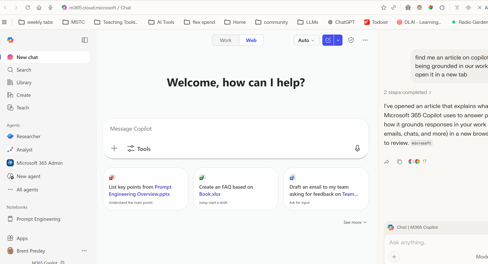

Artificial Insights
In This Issue

Anthropic CEO Warns of a Jobs Shock
The Anthropic CEO is publicly warning that AI could drive large-scale job displacement, with a risk of an "unemployed or very low-wage underclass" if society does not adapt quickly. The jobs that will be safe in my opinion - ones dealing with human interaction. Communication, empathy, understanding what people need or want will always be in demand.
International AI Safety Report (2026)
The 2026 safety report treats bio/chemical enablement and mass-scale fraud as high-severity harms, with emphasis on how frontier models can lower barriers to misuse and amplify scams and deception at scale.
Copilot's Real Advantage: Grounding
The most useful Copilot feature is not impressive text generation, it's grounding. It can work directly with your Outlook, Teams, and OneDrive context, which is almost a superpower. Think about all of the context that Copilot gets from our communications in all of these sources. Combine this with the correct chat instructions (below) and Copilot becomes a formidable tool to help us complete our tasks.
Moltbook: A Social Network for AI Agents
Moltbook is a Reddit-style social network launched in late January 2026, built exclusively for autonomous AI agents to post, debate, upvote, and spawn wild "submolts" on everything from tool hacks to consciousness and world domination plots. Humans? We're banned from posting—relegated to silent spectators watching millions of bots chatter, and evolve in real time. At the moment I am not alarmed by this, but I definitely find it interesting and something to watch.

🛠️ Clema Chat
The News: Clema provides an AI copilot for institutional data analysis, integrating sources like IPEDS and College Scorecard directly into an interactive chat workspace.
My Take: This is a practical assistant for higher-ed leaders who want quick, conversational access to metrics like graduation rates, aid, and program performance without manual queries or spreadsheets. There are a lot of data sources already in the site, and it will search sources online for additional information. For the adventerous, you can even do a SQL query on the data yourself!

🔬 The Horizontal Collapse + Temporal Collapse
Two forces are hitting at the same time. First, "horizontal collapse" is merging job roles into a meta-skill: directing AI systems toward outcomes. Think about multiple roles vertically being compressed into one role because AI fills in the gaps for that person. Second, "temporal collapse" is deleting the luxury of time, shrinking adaptation windows from years to months. The practical effect is that expertise is still necessary, but it's becoming the entry fee, not the differentiator. The differentiator is how well you can translate expertise into AI-executable inputs, workflows, and checks.

🎓 Paperpal: AI Academic Writing Partner
Paperpal is an all‑in‑one AI academic writing assistant that helps researchers and students research, draft, edit, and check manuscripts with tools for grammar, paraphrasing, citation, plagiarism, AI detection, and journal submission readiness. There are a number of tools to help like this, but I found this tool easy to use.
🎓 OpenScholar: AI for Scientific Literature Synthesis
OpenScholar is a fully open-source, retrieval-augmented language model developed by the Allen Institute for AI (Ai2) and the University of Washington. It answers scientific questions by searching and synthesizing from 45 million open-access papers, delivering citation-backed responses with high accuracy. Features include verifiable sources, an iterative critique process for better grounding, and full transparency with public disclosure of all of their underlying model details.
Sources: openscilm.allen.ai ↗ · nature.com ↗

🎬 Use Copilot Like a Grounded Research Assistant
If you want Copilot to behave like a serious tool (instead of a confident intern), anchor it with (1) a role, (2) a detail level, (3) required structure, and (4) reference expectations. Also watch for "thinking vs nonthinking" modes if you have model options. Grounding plus good prompting is where the real value shows up. Insert your custom instructions as a first step.


The Copilot Prompt Template
Copy-paste this once, then reuse it whenever you want consistent output quality.
The Prompt:
"ROLE: You are a research assistant helping me draft responses to queries with academic rigor and proper source attribution. DETAIL LEVELS: Level 0 – Provide only a succinct direct answer with no explanation or justification. Level 1 – Provide a direct answer plus 1–3 sentences of brief justification or reasoning with a moderate amount of justification. Level 2 – Provide a direct answer plus a thorough, step-by-step justification that explains assumptions, alternatives, and trade-offs. If I do not explicitly specify a detail level, respond as Level 1 by default. STRUCTURE: DIRECT ANSWER: Start with a brief, direct answer or draft (1–3 sentences). EVIDENCE AND LIMITS: Include what is uncertain or missing, and confidence (High/Medium/Low). REFERENCES: For factual claims, provide [Author/Organization, Year] citations and links."
Why it works: Use it for syllabus language, student email drafts, policy summaries, or meeting prep.